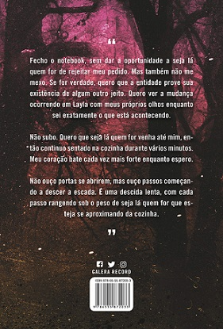
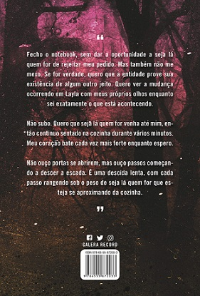

As mil partes do meu coração
"Ficamos abraçadas por um bom tempo e isso me fez questionar por que todos nessa família se opuseram tanto à sinceridade e aos abraços nos últimos anos. Acho que todos nós chegamos ao ponto em que esperávamos que alguém tomasse a iniciativa, mas ninguém jamais tomou.Talvez essa seja a origem de muitos problemas: ninguém tem a coragem de dar o primeiro passo para falar desses problemas."


Até o verão terminar
"Ele tem um olhar meditativo e meio pesado, que eu pensava existir apenas em pessoas iguais a mim. O que pode ser tão terrível sobre a vida desse cara que me leva a crer que ele tenha sofrido? Dá para ver que ele passou por alguma coisa. Uma pessoa ferida reconhece outra. É como um clube do qual ninguém quer fazer parte."
É assim que acaba
"Imagine todas as pessoas que você conhece ao longo da vida. São muitas. Elas surgem como ondas, entrando e saindo aos poucos dependendo da maré. Algumas ondas são muito maiores e causam mais impacto que as outras. Às vezes, as ondas trazem coisas lá do fundo do mar e as largam no litoral. Marcas nos grãos de areia que provam que as ondas estiveram lá, muito depois de a maré recuar."


É assim que começa
"O divórcio é difícil. Eu sabia que seria, mas é muito mais difícil do que eu esperava. E lidar com o divórcio com um filho no meio é um milhão de vezes mais complicado. Você está preso nessa pessoa para o resto de sua vida. Você tem que descobrir uma maneira de planejar festas de aniversário juntos ou descobrir uma maneira de ficar bem com celebrações separadas. Você tem que planejar quais feriados cada um de vocês pode passar com seu filho, quais dias da semana, até quais horas do dia às vezes. Você não pode estalar os dedos e terminar com a pessoa com quem se casou e se divorciou. Você está preso a ele. Para sempre."
Layla
"Fecho o notebook, sem dar a oportunidade a seja lá quem for de rejeitar meu pedido. Mas também não me mexo.
Se for verdade, quero que a entidade prove sua existência de algum outro jeito. Quero ver a mudança ocorrendo
em Layla com meus próprios olhos enquanto sei exatamente o que está acontecendo.
Não subo. Quero que seja lá quem for venha até mim, então continuo sentado na cozinha durante vários minutos.
Meu coração bate cada vez mais forte enquanto espero.
Não ouço portas se abrirem, mas ouço passos
começando a descer a escada. É uma descida lenta, com cada passo rangendo sob o peso de seja lá quem for
que esteja se aproximando da cozinha."
 


Verity
"Vasculho várias caixas e encontro manuscritos em diversos estágios do processo de escrita. Todos são versões dos seis
livros da série que ela já escreveu. Não há nada que indique o que estava planejando escrever em seguida.
Estou na sexta caixa, esquadrinhando todo o seu conteúdo, até que encontro algo com um título diferente. Chama-se 'Que assim seja'.
Folheio as primeiras páginas torcendo para ser um rascunho do sétimo livro da série. Mas quase imediatamente vejo que não é.
É algo mais...pessoal. Volto à primeira página do primeiro capítulo e começo a ler.
'Às vezes penso na noite em que conheci Jeremy e me pergunto: se não tivéssemos cruzado nossos olhares, minha vida teria terminado
do mesmo jeito?' "
O lado feio do amor
"A diferença entre o lado bonito e o lado feio do amor é que o lado bonito é bem mais leve. A pessoa se sente como se estivesse flutuando. Ele ergue a pessoa. Carrega-a consigo. As partes bonitas do amor fazem você ficas acima do resto do mundo. Elas deixam a pessoa muito acima das coisas ruins, e a fazem olhar para todo o resto lá embaixo e pensar: Caramba. Que bom que estou aqui em cima."